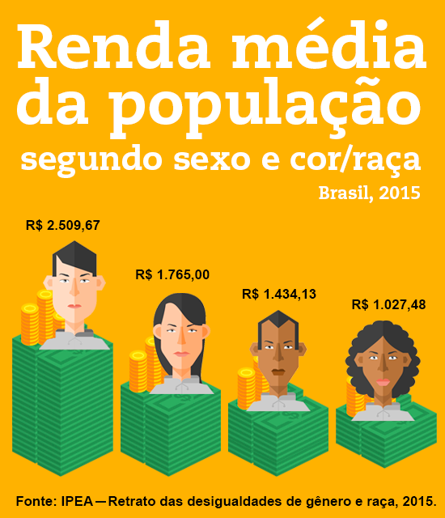
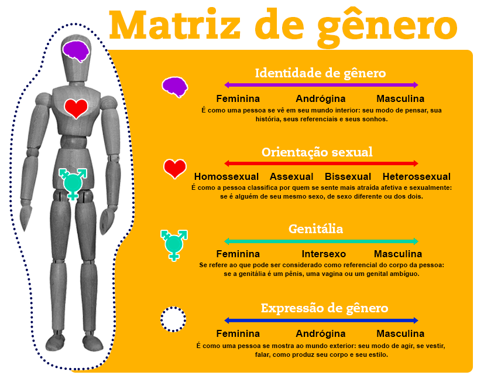
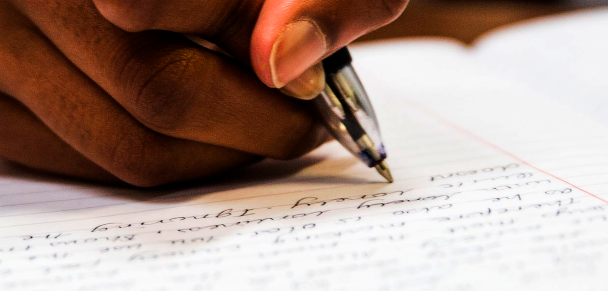
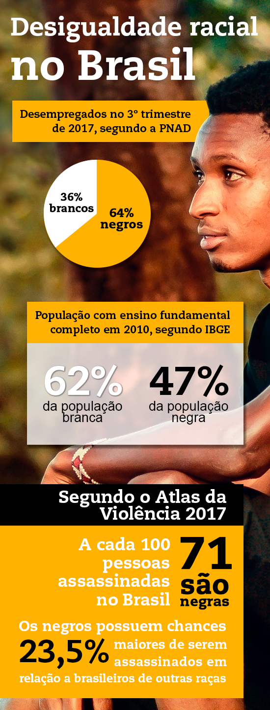
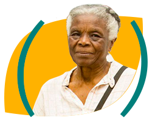
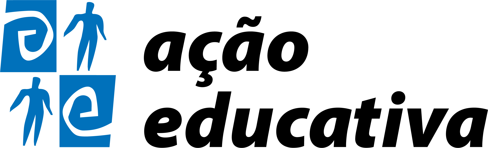

Módulos
Clique nos itens abaixo para visualizar os módulos.
Gênero: uma diferença transformada em desigualdade
Cada sociedade se organiza ao longo da história e constrói para si um conjunto de normas e expectativas. Nem sempre essas normas são escritas, como as leis, mas mesmo assim todo mundo na sociedade as conhece e costuma segui-las. Isso acontece muito em relação às nossas expectativas sobre o que é ser homem ou ser mulher. Em nenhum lugar está escrito que não podemos dar uma roupa cor-de-rosa para um menino recém-nascido, não é? Mas, sabemos que aparecer na maternidade com uma roupa de princesa para presentear um menino seria causar um grande constrangimento, pois essa é uma regra sobre gênero.
“Gênero” é o nome dado para o conjunto de regras sociais que, ao longo da história de nossa sociedade, sobrepôs informações acerca dos corpos das pessoas com orientações sobre comportamentos, expectativas, desejos e identidades. É uma forma de falarmos sobre tudo aquilo que nossa sociedade criou para dividir o mundo em uma grande oposição: entre o feminino e o masculino.
Das diferenças entre nossos corpos, a nossa cultura produziu também hierarquias e posições de poder. Assim como acontece com as diferenças de cor de pele que há séculos sustentaram a escravidão e baseiam o racismo, as diferenças de gênero viraram base para desigualdades, discriminações e relações de poder entre homens e mulheres.

Aperte o play e escute o áudio sobre renda média da população.
Mas, além da comparação entre os dados, quando olhamos para números como esses precisamos também nos perguntar: como essas desigualdades impactam as condições de vida das brasileiras? Que tipo de sonhos, expectativas ou realidades nossa sociedade permite que elas vivam? E quais lhes são tiradas? Quais os efeitos das desigualdades de gênero entre os homens? E como essas desigualdades ameaçam o direito à educação?
Desigualdades de gênero, exclusão escolar e o lugar da EJA na promoção do direito à educação
Há ao menos quatro tipos mais visíveis de desigualdade de gênero que afastam os estudantes da escola. Clique nos títulos abaixo e conheça os tipos.
Exemplos de mulheres que abandonaram os estudos porque engravidaram na adolescência e de homens que trocaram o tempo na escola em horas de trabalho para ajudar financeiramente suas famílias.
Casos de estudantes mulheres que só puderam voltar à escola depois de ficarem viúvas ou romperem um relacionamento violento no qual o marido não permitia que estudassem.
Meninos que assumem uma versão de masculinidade vista na escola como “indisciplinada” e contrária dos comportamentos considerados mais femininos de “capricho” e “obediência”. Contrapondo-se às hierarquias escolares, eles são sistematicamente reprovados e expulsos do ensino regular. Somado a isso, existe uma baixa expectativa em relação aos meninos negros e seus estudos. É como se, desde o início, as pessoas não tivessem qualquer expectativa deles se destacarem na escola e esse estereótipo reforça o desânimo deles: em geral, eles não acreditam que poderão ser reconhecidos como pessoas de destaque por meio da educação.
O Brasil é o país que mais mata pessoas LGBT no mundo e, nas escolas, a diversidade de gênero e sexualidade de torna motivo de preconceito, discriminação, ofensas, piadas e até mesmo violência física. Com medo, muitos desses estudantes abandonam os estudos, tal como veremos no próximo módulo.
E como podemos mudar esse cenário?
Ao final deste Eixo, você encontra algumas dicas e estratégias específicas de enfrentamento às desigualdades de gênero na escola. Com algumas ferramentas em mãos é possível fazer da EJA um espaço de acolhimento e inclusão, tal como sempre foi sua vocação. E, desse modo, transformar a própria garantia do direito à educação em mais um passo para o combate das desigualdades.
Veja também
Sugestões de leitura
- “Conversando sobre violência e convivência nas escolas”: de Miriam ABRAMOVAY. Rio de Janeiro: FLACSO, OEI, MEC, 2012.
- “Diferentes, não desiguais: a questão de gênero na escola” de Bernardo Fonseca MACHADO, Beatriz Accioly LINS e Michele ESCOURA. São Paulo: Ed. Reviravolta/Cia das Letras, 2016.
- “Gênero e raça: a EJA como política de ação afirmativa” de Denise CARREIRA. In: A EJA em xeque: desafios das políticas de Educação de Jovens e Adultos no século XXI. São Paulo: Ed. Global, 2014.
Escola, cenário de violência
 Lilith [aos oito anos] ainda não era travesti e se portava como menino, mas devido aos seus trejeitos femininos sempre era molestada e agredida pelos outros meninos que a humilhavam constantemente. Um dia, após o sinal de retorno do recreio, Lilith dirigiu-se ao banheiro (deixava para ir por último para evitar molestações) e foi atacada por nove meninos que a obrigaram a fazer sexo oral e anal com todos do grupo. Após a experiência da “curra”, ficou algum tempo caída no chão, chorando, até ser encontrada pela servente da escola, que a levou até a diretoria, onde fez a queixa e a denúncia dos meninos que a haviam violentado. Após a denúncia, a diretora chamou os meninos envolvidos e constatou que entre eles estavam seu filho e um sobrinho que, em prantos, negavam a participação no episódio. Após alguns dias, a diretora da escola convocou Lilith e seus familiares para promulgar a sua expulsão por “atentado violento ao pudor”. (Peres, “Cenas de exclusões anunciadas: travestis, transexuais, transgêneros e a escola brasileira”, 2009).
Lilith [aos oito anos] ainda não era travesti e se portava como menino, mas devido aos seus trejeitos femininos sempre era molestada e agredida pelos outros meninos que a humilhavam constantemente. Um dia, após o sinal de retorno do recreio, Lilith dirigiu-se ao banheiro (deixava para ir por último para evitar molestações) e foi atacada por nove meninos que a obrigaram a fazer sexo oral e anal com todos do grupo. Após a experiência da “curra”, ficou algum tempo caída no chão, chorando, até ser encontrada pela servente da escola, que a levou até a diretoria, onde fez a queixa e a denúncia dos meninos que a haviam violentado. Após a denúncia, a diretora chamou os meninos envolvidos e constatou que entre eles estavam seu filho e um sobrinho que, em prantos, negavam a participação no episódio. Após alguns dias, a diretora da escola convocou Lilith e seus familiares para promulgar a sua expulsão por “atentado violento ao pudor”. (Peres, “Cenas de exclusões anunciadas: travestis, transexuais, transgêneros e a escola brasileira”, 2009).
A história de Lilith é descrita no trabalho de Willian Peres (indicado nas sugestões de leitura), mas poderia ser encontrada em muitas outras trajetórias de estudantes lésbicas, gays, bissexuais, travestis ou transexuais (LGBT). Segundo a Pesquisa Nacional sobre o Ambiente Educacional no Brasil, 68% dos jovens LGBT já foram atacados verbalmente e 35% agredidos fisicamente dentro do ambiente escolar por conta de suas orientações sexuais ou identidades de gênero.
Para 60% dos estudantes da pesquisa, a escola é um lugar inseguro. Medo, depressão e contínuas tentativas de suicídio são algumas das consequências íntimas desse processo de constante violação. Mas além disso, a rotina de agressões e ameaças produzem também afastamento, queda de rendimento e desistência escolar. Ninguém gosta de estar onde não se sente bem-vindo.
Nesse cenário de violência, todos os anos jovens LGBT evadem das salas de aula e somam-se ao número de estudantes que tiveram seu direito à educação negado. No mini-documentário “Depois da Tempestade: a LGBTfobia na escola”, você pode acompanhar alguns desses relatos de exclusão.
LGBT: o que há por dentro das letrinhas
Por trás desse cenário há também a crescente reivindicação de estudantes pelo debate sobre diversidade na sala de aula e educadores cada vez mais comprometidos em reverter a situação de violência contra a população LGBT nas escolas. Entretanto, como são raras as formações iniciais de professores que enfrentam essa questão, o que não falta são dúvidas sobre o tema.
Para começar, a própria sigla LGBT: qual a diferença entre “gay” e “lésbica”? “Travesti” também é “gay”? É possível ter “transexual” “lésbica”? Para entender um pouco mais dessa soma de letrinhas, precisamos primeiro falar sobre a diferença entre orientação sexual e identidade de gênero.
Aperte o play e escute o áudio sobre diferença entre
orientação sexual e identidade de gênero.

Em nossa sociedade, é comum termos como uma regra implícita que para uma pessoa ser uma mulher, ela precisa ter nascido com uma genitália feminina e apresentar todos os gestos, comportamentos e habilidades consideradas femininas, inclusive se apaixonar apenas por homens. É como se fosse suposto uma espécie de combinação única entre todos esses elementos: genitália, identidade, jeito e desejo.
Mas a existência de pessoas que nem sempre se enquadram nessas regras nos mostra que a variedade humana extrapola os modelos que a sociedade estabeleceu como ideais. E em cada uma das dimensões da identidade de gênero ou orientação sexual existe uma variedade imensa de possibilidades e arranjos.
Dessa enorme diversidade humana de expressão de si e de seus afetos, os ciclos de violência se produzem quando pressupomos que a diferença não deva existir. Presumir que só existe um jeito único e ideal de ser homem ou ser mulher é criar discriminações, preconceitos e marginalizações entre todos aqueles que não se “encaixam” na regra. É desta cobrança social para que todo mundo se enquadre na matriz de gênero que nasce um conjunto de práticas excludentes: homofobia (em relação a homossexuais), lesbofobia (contra lésbicas), transfobia (referente travestis e transexuais). Discriminações que têm impacto direto na subjetividade, nas relações sociais e também na garantia de direitos básicos da população LGBT, como o direito à educação, discutido anteriormente.

Assumindo a EJA em um espaço contra a desigualdade
Como vimos no módulo anterior, a institucionalização da Educação de Jovens e Adultos no Brasil está intimamente relacionada com a luta por direito à educação ao longo da vida das pessoas mais vulneráveis da população. Consolidada sob forte vocação inclusiva, muitas vezes é somente pela EJA que homens, mulheres, meninas e meninos expulsos do processo escolar regular podem concluir a escolarização. E é nessa brecha que podemos atuar.
Trazer de volta às salas de aula sujeitos que carregam consigo uma imagem da escola como lugar de violência e humilhação é uma tarefa que exige sensibilidade e insistência. Mas, às vezes, são nas ações mais simples que podemos alcançar os primeiros resultados. Um exemplo foi a estratégia desenvolvida entre 2015 e 2016 por um Programa de inclusão escolar de travestis e transexuais. Para superar as memórias antigas e garantir a construção de experiências positivas na escola, que permitissem o retorno e a permanência dos sujeitos vulneráveis, o sucesso da iniciativa da EJA deveu-se em grande parte pelas estratégias de construção ativa de laços de confiança emocional e cuidado cotidiano entre equipe escolar e travestis e transexuais. Para aprender, o estudante precisa antes sentir-se seguro e acolhido, tal como mostra a pesquisa detalhada no texto “O acolhimento como estratégia”, sugerido a seguir. E nesse sentido, a ferramenta de construção de um espaço escolar mais digno à população LGBT, por muitas vezes, se resume em mudanças básicas no comportamento cotidiano escolar.
Informe-se
Passe o mouse nos cards abaixo para ver a definição dos termos que discutimos nessa seção.
Bissexual
É a pessoa que se sente atraída afetiva e sexualmente por pessoas tanto do gênero oposto como do mesmo gênero.
Cisgênero
Pessoa que tem uma identidade de gênero em consonância com a genitália de nascimento.
Orientação sexual
Refere-se ao modo como uma pessoa sente atração sexual ou afetiva. Pode ser desejo de se relacionar com pessoas do seu mesmo gênero (orientação homossexual), do gênero oposto (orientação heterossexual), pelos dois (bissexual) ou não expressar atração sexual (assexual).
Gay
Pessoa com identidade de gênero masculina que se sente atraída ou mantém relações afetivo-sexuais com pessoas também masculinas.
Desigualdade
Quando uma diferença é transformada em fonte para uma posição de poder. Ou seja, quando uma diferença vira base para julgamentos que classificam um lado como melhor que outro, seja essa diferença de ordem física, moral, regional, religiosa, geracional, sexual, linguística, identitária ou econômica.
Estereótipo
O que é criado como expectativa sobre uma pessoa tomando como pressuposto alguma característica sua. Isto é, a imagem preconcebida que temos dela a partir de alguma característica sua, como se todas as pessoas com aquela mesma característica automaticamente tivessem as mesmas ações, comportamentos, desejos ou valores. Por exemplo: generalizamos que todas as pessoas do gênero feminino desejam se casar ou ser mães, como se não houvesse possibilidade de alguém ter um desejo contrário.
Gênero
Conceito criado no final dos anos 1960 para falar sobre os aspectos culturais que produzem a diferenciação entre masculinidades e feminilidades e também suas relações de poder e desigualdade.
Homofobia
É toda discriminação ou violência, seja ela física ou simbólica, contra pessoas com orientação sexual homossexual.
Heterossexual
Quem se sente atraída afetiva e sexualmente por pessoas do gênero oposto.
Homossexual
Quem se sente atraída afetiva e sexualmente por pessoas do mesmo gênero.

Identidade de gênero
É como uma pessoa se vê e como ela se mostra para o mundo. Seu modo de pensar, se vestir, sonhar ou agir.
Lésbica
Pessoa com identidade de gênero feminina que se sente atraída ou mantém relações afetivo-sexuais com pessoas também femininas.
Travesti/Transexual
Quando uma pessoa tem uma identidade de gênero diferente daquela socialmente esperada para sua genitália, por exemplo: quando uma pessoa tem uma vagina, mas se reconhece e mostra como homem (referido sempre no masculino e chamado de “homem trans”) ou nasceu com um pênis e se reconhece e mostra como uma mulher (referida sempre no feminino e chamada de “mulher transexual”) . Elas podem ser heterossexuais, homossexuais, bissexuais ou assexuais: orientação sexual não depende da identidade de gênero. Para saber mais, acompanhe a reportagem especial Eu Trans.
Transfobia
É toda discriminação ou violência, seja ela física ou simbólica, contra travestis ou transexuais.
Para saber mais sobre como a discriminação contra a população LGBT aparece na escola e como combatê-la, leia a reportagem da Revista Nova Escola“Combater a discriminação para promover a liberdade”.
- Associação Brasileira de Lésbicas, Gays, Bissexuais, Travestis e Transexuais. Secretaria de Educação. Pesquisa Nacional sobre o Ambiente Educacional no Brasil 2015: as experiências de adolescentes e jovens lésbicas, gays, bissexuais, travestis e transexuais em nossos ambientes educacionais. Curitiba: ABGLT, 2016.
- PERES, Wiliam Siqueira. Cenas de exclusões anunciadas: travestis, transexuais, transgêneros e a escola brasileira. In: JUNQUEIRA, Rogério Diniz (Org.). Diversidade sexual na educação: problematizações sobre a homofobia nas escolas. Brasília: MEC, Secretaria de Educação Continuada, Alfabetização e Diversidade, UNESCO, 2009. p. 235-263.
- CATELLI Jr., Roberto; ESCOURA, Michele. O Acolhimento como estratégia: uma experiência escolar no âmbito do Programa Transcidadania. In: JESUS, Beto de; KRAICZYK, Juny (Orgs.) Reafirmando cidadania e identidade de gênero - Uma experiência na cidade de São Paulo. São Paulo: Aids Healthcare Foundation Brasil, 2018.
- CATELLI Jr., Roberto; ESCOURA, Michele. Sujeitos da Diversidade: a agenda LGBT na educação de Jovens e Adultos. Revista Olh@res, v.4, n.1, 2016.
O racismo e as práticas discriminatórias disseminadas no cotidiano brasileiro não representam simplesmente uma herança do passado. O racismo vem sendo recriado e realimentado ao longo de toda a nossa história. Seria impraticável desvincular as desigualdades observadas atualmente dos quase 4 séculos de escravismo que a geração atual herdou. ”
Documento Oficial Brasileiro para a III Conferência Mundial contra o Racismo, a Discriminação racial, a Xenofobia e as Formas Correlatas de Intolerância. Durban, 2001.
No documento oficial, apresentado em 2001, na Conferência Mundial contra o Racismo, a Discriminação racial, a Xenofobia e as Formas Correlatas de Intolerância, promovida pela UNESCO e realizada em Durban na África do Sul, o Estado brasileiro assume o vínculo entre as desigualdades sociais e o racismo que estrutura as relações sociais no Brasil e indica a responsabilidade do Estado na proposição de ações afirmativas direcionadas à sua superação.
No campo da educação a principal ação afirmativa decorrente deste processo é a alteração da LDB, em 2003, pela Lei 10.639, que torna obrigatória a inclusão do ensino da História e cultura afro-brasileiras e africanas no currículo oficial da Educação Básica e inclui no calendário escolar o Dia Consciência Negra (20 de novembro). Em 2008, a legislação foi complementada com a divulgação das Diretrizes Curriculares Nacionais para a Educação das Relações Étnico-Raciais e para o Ensino de História e Cultura Afro-Brasileira e Africana.
Marcos legais para o enfrentamento ao racismo na Educação
Raça, racismo, preconceito, discriminação racial... tramas do racismo estrutural
Transitar pelo universo das relações raciais exige clareza na utilização de termos, tendo em vista a evolução histórica dos conceitos e abordagens nesse campo. Clique sobre os círculos e conheça a definição dos termos:


A história de Diva Guimarães
Diva Guimarães é uma professora de educação física aposentada, nascida em Serra Morena, no norte do Paraná.
Para que recebesse educação formal sua família permitiu que fosse levada aos 5 anos por freiras missionárias com a promessa de que iria estudar. As internas levadas pelas missões, maioria pobre e negra, se tornavam, na verdade, serviçais submetidas a maus-tratos e ao trabalho pesado da limpeza do colégio, com métodos de ensino rígidos e severos.
“A agressão física, as chibatadas cicatrizam e adormecem. Mas a palavra não cicatriza. Fica incrustada na alma, tortura e não se apaga. Imagina isso na cabeça de uma criança de 5 anos, pobre e negra.”
Sua história de vida, educação e luta contra o racismo foi narrada em 1ª pessoa durante o lançamento do livro “A pele que habito” de Lázaro Ramos, na FLIP – Feira Internacional do Livro de Paraty, em 2017.
Vale a pena conhecer essa história.
- FLIP 2017: Fala de Diva Guimarães -
https://www.youtube.com/watch?v=Z5aS8bukb2o- Entrevista de Diva Guimarães no Programa Espelho de Lázaro Ramos
https://www.youtube.com/watch?v=oGRoRHtHv6Q
Sugestões de leitura
- PNUD
- Fundação João Pinheiro
- IPEA
Documento: Atlas da violência 2017.
- IPEA
- Fórum Brasileiro de Segurança Pública
Vídeo: 2 minutos para entender a desigualdade racial no Brasil.
A cada 12 minutos um negro é assassinado no Brasil. Não para por aí: a cor da sua pele influencia na sua educação, saúde e renda.
Segundo o IBGE, negro é aquele que se identifica como preto ou pardo.
Entenda como estamos longe de sermos igualitários em um país onde o preconceito racial atinge mais da metade da população.
Escola, cenário de violência
Nós, professores brasileiros, conseguimos dar uma aula belíssima sobre a exploração da classe trabalhadora para alunos e alunas jovens e adultos(as), usando das mais variadas estratégias, como conversas, dinâmicas, assembleias e sequer tocamos no fato de que essa classe é maciçamente formada por negros. ”
Nilma Lino Gomes (DINIZ; VASCONCELOS, 2004)
O racismo é um grande obstáculo na construção de trajetórias escolares contínuas e adequadas aos projetos de vida e de carreira profissional das crianças e jovens negras. A presença massiva de estudantes negros nas salas de aula de EJA é representativa dos desafios envolvidos na garantia do direito de todos à educação por toda vida e de acolhimento às diferentes biografias e culturas no ambiente escolar.
O reconhecimento da escola como espaço de reflexão e ação para a superação do racismo implica na necessária apropriação dos mecanismos que operam na reprodução das desigualdades raciais visando sua desconstrução e o desenvolvimento de ações antirracistas em todas as dimensões da vida escolar e, especificamente, na EJA.
Caminhos para a construção da educação para a diversidade: gênero e raça
A invisibilidade da temática das relações raciais na EJA oculta os aspectos realmente relevantes para enfrentarmos o negligenciado debate acerca do significado da educação escolar para a vida das pessoas reais e as complexidades envolvidas no processo de construção de conhecimento dos jovens e adultos.
Seis fundamentos da educação de jovens e adultos dialogam diretamente com a construção da educação antirracista. Clique sobre os títulos abaixo e conheça-os:
Implicações
• Adotar uma perspectiva contextualizada para a organização do ensino e seleção de conteúdos.
• Abordar temas relevantes para as pessoas jovens e adultas das comunidades atendidas.
Desdobramentos na perspectiva racial
• Afirmação do caráter multirracial e pluriétnico da sociedade brasileira.
• Reconhecimento da presença negra nas salas de aula e no território.
• Aprofundamento do conhecimento acerca das diferentes culturas presentes nas salas de aula da EJA e no território.
• Desconstrução da ideia de hierarquia entre culturas.
• Proposição de processos pedagógicos que privilegiam a interação, reflexão e valorização das diferenças.
Implicações
Aprofundar o conhecimento relativo ao universo e relações de trabalho na história da humanidade e nas suas peculiaridades locais.
Desdobramentos na perspectiva racial
Reflexão acerca do processo de transição do trabalho escravo para remunerado, destacando as implicações históricas para as relações raciais e indicadores sociais no Brasil atual.
Implicações
• Construir processo de formação inicial e continuada, específico para educadores e gestores da EJA.
• Adequar equipamentos, espaço físico e rotina escolar às necessidades das pessoas jovens e adultas.
Desdobramentos na perspectiva racial
• Inclusão no processo de formação dos professores de reflexões acerca das diferentes trajetórias e de enfrentamentos cotidianos vivenciados por alunos e alunas no tocante a relações raciais dentro e fora da escola.
• Atenção constante à representação equilibrada e livre de estigmatizações das diferentes raças no ambiente escolar, materiais didáticos e atividades propostas.
• Promoção do conhecimento sobre a África e africanidades brasileiras em suas múltiplas abordagens.
Implicações
• Tendências atuais do mundo do trabalho.
• Relações étnico-raciais.
• Relações de gênero e direitos da mulher.
• Meios de informação e comunicação.
• Cidadania e participação.
Desdobramentos na perspectiva racial
• Manutenção de acervo e recursos adequados para a abordagem das questões étnico-raciais incluindo livros, periódicos, filmes e jogos, para alunos/as e professores/as.
• Organização de debates e atividades direcionadas ao enfrentamento do racismo e desigualdades sociais no Brasil e na localidade.
• Abordagem da cultura negra em suas múltiplas manifestações como patrimônio histórico, ambiental, econômico, político e cultural.
• Análise crítica e constante da representação das diferentes raças nos meios de informação e comunicação.
Implicações
Promover aprendizagens que permitam às pessoas jovens e adultas a participação plena na sociedade.
Desdobramentos na perspectiva racial
• Incentivo à participação da comunidade escolar nas lutas antirracistas.
• Promoção da reflexão coletiva sobre o papel do racismo na construção das desigualdades educacionais no Brasil.
• Reconhecimento de todos os alunos e alunas da EJA como sujeitos de conhecimento e aprendizagem, rompendo o estigma histórico dos estudantes negros como menos capacitados.
• Reconhecimento da EJA como espaço de reivindicação de direitos educativos, problematização de experiências, valorização, construção e transformação de conhecimentos.
Educação para a diversidade
A construção para a diversidade como conteúdo multidisciplinar deve transcorrer atrelada a outras ações e percepções da especificidade do universo dos sujeitos da EJA e suas intersecções.
Clique nos itens abaixo para conhecer as temáticas que podem ser trabalhadas em sala de aula com apoio de recursos audiovisuais.
Vídeo: O perigo de uma história única: Chimamanda Ngozi Adichie (TED)
Nascida em Abba, na Nigéria, a escritora Chimamanda Ngozi Adichie usa o seu exemplo de vida para destacar o perigo de uma história única reproduzida. Filha de um professor universitário e de uma secretária, ela cultivou, desde a infância, o gosto pela literatura, principalmente inglesa, até descobrir a africana. Durante sua apresentação no TED (Technology, Entertainment, Design), conferência realizada nos Estados Unidos, que promove a troca de experiências e ideias entre personalidades de diferentes áreas, a escritora narra sua formação leitora e escritora e a percepção do eurocentrismo e o confronto com o desconhecimento acerca do continente africano vivenciado em sua trajetória.
Brasília: UNESCO, Secad/MEC, UFSCar, 2010.
Vídeo TV Escola - Salto para o futuro – Intolerância religiosa: O que a escola tem com isso? (2016)
Entre 2011 e 2015, o Brasil registrou 697 denúncias de intolerância religiosa, segundo dados da secretaria especial de direitos humanos. No ano passado, no entanto, os casos de intolerância cresceram muito: até setembro de 2016, o disque 100 registrou 300 denúncias de discriminação religiosa no país.
De acordo com o relatório Intolerância religiosa no Brasil 2016, uma parceria entre o centro de articulação de populações marginalizadas e a comissão de combate à intolerância religiosa, o segmento das religiões afro-brasileiras concentra o maior número de vítimas da intolerância religiosa.
Cerca de 60% das denúncias registradas foram feitas por seguidores do candomblé e da umbanda. Ainda segundo os dados do Disque 100, em 2016, 35,39% das vítimas eram negros. Os brancos corresponderam a 21,35% e os indígenas, a 0,56%. No período, não faltaram casos em que a escola foi cenário de episódios de intolerância, preconceito e até violência. E é justamente para entender o papel da escola nesse cenário que o Salto para o Futuro discute este tema tão importante e atual nesta edição.
1. Vídeo: Diz Aí - Enfrentamento ao Extermínio da Juventude Negra - Ep01 – Canal Futura
"O problema do Brasil é social ou racial?" A partir desse questionamento, jovens refletem como o racismo e a ausência de políticas públicas, sobretudo nas periferias, contribuem para o extermínio da juventude negra no país.
Sobre o Diz Aí: O objetivo dessa temporada é fomentar reflexões e trazer experiências que contribuam para o combate à violência e diminuição das altas taxas de homicídio que vitimam os jovens brasileiros, sobretudo, os jovens negros. Esta nova leva de programas, em parceria com a Querô Filmes, conta com participação de grupos do Pará, Bahia, São Paulo e Rio de Janeiro.
2. Vídeo: TVE Debate: Juventude Negra e Estética (PART I)
O TVE Debate desta edição discute juventude negra e estética. É possível perceber com mais intensidade nos últimos anos que os jovens negros vêm expandindo as suas forças. Essas potências de ideias, comportamento e estéticas figuram diversos movimentos sociais na internet e se multiplicam também pelas ruas, protagonizados por muitos jovens.
Essa juventude contemporânea que resgata suas identidades, faz parte de uma juventude empoderada, muito conhecida como "Geração Tombamento". Os convidados são a influenciadora digital e pesquisadora, Luma Nascimento, o idealizador do Coletivo AfroBapho, Alan Costa, ativista do empoderamento crespo, Samyra Soares, militante do empoderamento crespo, Lorena Lacerda.
3. Série “Cara gente branca” (Dear White people) - Netflix
Baseada num filme de 2014, a série conta a história de Sam White e outros jovens negros numa universidade majoritariamente branca, nos EUA. Depois de uma festa com temática racista organizada por um grupo de alunos brancos, várias tensões raciais se desenrolam no ambiente acadêmico. Você encontrará aqui 13 assuntos importantes que o seriado toca — e que todo mundo deveria saber sobre racismo.
Documentário: História do Movimento Negro no Brasil
CULTNE DOC – Série de documentários com temáticas relativas à memória dos movimentos negros no Brasil.
Em 2009, o site do CULTNE - Acervo da Cultura Negra, foi lançado trazendo um valioso acervo registrado ao longo de mais de 35 anos. Um dos maiores acervos digitais de cultura negra do país, disponibiliza o seu conteúdo para ser utilizado livremente em edições jornalísticas, projetos estudantis ou em qualquer atividade sem fins lucrativos, desde que citada a fonte.
Neste programa a socióloga Nubia Regina Moreira apresenta a história e a fala do movimento feminista negro. As mulheres negras brasileiras vêm se organizando na defesa de sua identidade e pontuando suas diferenças, dentro do próprio movimento negro e no movimento feminista. O desafio, presente ainda hoje, é conseguir resignificar uma identidade feminina, que no imaginário social brasileiro permanece representada apenas pela ideia de um corpo.
Programa da série: "O que querem as mulheres ?" com curadoria de Margareth Rago.
Produção: Instituto CPFL
Histórias Afro Atlânticas – Vozes do MASP
“Vozes do MASP” é um conjunto de áudios sobre a coleção do Museu de Arte de São Paulo (MASP) onde artistas, educadores, historiadores da arte, militantes do movimento negro e pessoas vinculadas a religiões de matriz africana foram convidadas a escolher obras da coleção e a apresentá-las em áudios curtos. Foram também provocados a pensar em abordagens que interessassem, em especial, ao público de professores(as).
Os áudios integram o Projeto “Histórias Afro Atlânticas” que o museu desenvolve ao longo de 2018, dedicando suas exposições e programas públicos e de mediação a uma revisão das narrativas da arte e da cultura visual sobre os "fluxos" e "refluxos" do trânsito colonial entre África, Américas e Caribe.
Indicadores de qualidade na Educação: Relações raciais na Escola
A Coleção Educação e Relações Raciais: apostando na participação da comunidade escolar tem por objetivo contribuir para que as escolas desenvolvam um processo de autoavaliação participativa sobre a implementação da Lei 10.639, ampliem a roda de pessoas e coletivos envolvidos com a superação do racismo e de outras discriminações e construam um plano de ação estratégica que gere transformações efetivas no cotidiano escolar.
Curta: Acorda Raimundo
Um dia Raimundo acorda estranho: é ele quem faz o café e tem que cuidar da casa enquanto vê sua esposa saindo para trabalhar. Neste vídeo de curta-metragem, a inversão dos papéis de gênero das personagens cria cenas engraçadas e, ao mesmo tempo, coloca importantes questões sobre a desigualdade entre homens e mulheres.
Direção: Alfredo Alves
Ano: 1990 (vídeo disponível em youtube.com)
Filme: Billy Elliot
Billy é um garoto de 11 anos que sonha ser um bailarino profissional. O gosto do menino pela dança é o que gera conflitos com seu pai, um tradicional minerador, e com os vizinhos da pacata cidade. O filme é um bom exemplo para discutir preconceitos e discriminações.
Direção: Stephen Daldry
Ano: 2000
Filme: Clube da Luta
Um homem insatisfeito e entediado com sua vida está passando por uma grave crise de insônia quando é aconselhado a procurar grupos de apoio. Em meio à sua busca, encontra um desconhecido que inicia com ele uma rotina de agressões mútuas de forma a extravasar todo estresse cotidiano. Aos poucos, outros desconhecidos se juntam e formam um grupo de luta masculino, onde a violência é usada para aliviar angústias pessoais. O filme levanta questões sobre a masculinidade e o quanto a violência está a ela associada. É possível problematizar os modelos do que é socialmente ser “homem” e buscar discussões sobre o modo como meninos são ensinados a resolverem suas questões por meio da violência.
Direção: David Finche
Ano: 1999
Filme: Mulan
A história da Princesa Disney é um bom filme para se discutir a educação de gênero. Mulan é uma garota chinesa que está na idade de se casar, mas não tem sorte com a casamenteira que arranja os casamentos em sua vila. Sentindo que está manchando a honra de sua família com seu fracasso, Mulan então, se traveste de homem e aprende como se comportar de forma masculina para assumir um posto de batalha na guerra contra os Unos. O filme mostra Mulan aprendendo a ser um homem e seu sucesso como a grande heroína da batalha. Com o filme é possível problematizar a educação de gênero, a ideia de papéis femininos e masculinos e, ainda, a possibilidade de mulheres serem protagonistas de grandes conquistas coletivas, ou seja, delas serem tão fortes e heroicas quanto os homens que são representados em outros filmes.
Direção: Tony Bancroft e Barry Cook
Ano: 1998
Filme: Mulheres Perfeitas
O filme relata o cotidiano de uma vila onde mulheres são ou parecem ser perfeitas. Ao menos perfeitas para os homens: boas esposas, obedientes, bonitas, mães atenciosas e felizes. Com esse filme é possível identificar as características da educação de gênero que são naturalizadas. Além disso, o filme conta com um final surpreendente.
Direção: Frank Oz
Ano: 2004
Curta: Além das 7 cores
O curta de 19 minutos foi produzido a partir de apoio colaborativo, com doações pela internet à diretora e sua equipe. No filme, Glamour Garcia percorre as ruas da cidade de São Paulo e fala sobre sua experiência com a fluidez das categorias de gênero. O filme levanta discussões sobre as normas, limites, classes e categorias que nos são impostas pela sociedade em nossa educação.
Direção: Camila Biau
Ano: 2012 (vídeo disponível em vimeo.com)
Filme: Meninos não choram
O filme retrata o processo de uma pessoa nascida mulher que se transforma em homem. Embora a sua felicidade esteja atrelada em reconhecer e assumir sua identidade de gênero, as discriminações e a transfobia dos moradores de sua cidade desembocam em uma onda de violência. O filme possibilita muita discussão sobre discriminação e violência.
Direção: Kimberly Peirce
Ano: 2000
Filme: Minha vida em cor-de-rosa
O filme conta a história de Ludovic, um menino que acredita ser uma menina. O filme coloca em questão a ideia de “identidade de gênero” mostrando o quanto ela não depende necessariamente do sexo biológico das pessoas. Ao mesmo tempo, traz a importante discussão do preconceito de gênero e as discriminações que podem sofrer uma pessoa que não se encaixa nas expectativas sociais.
Direção: Alain Berliner
Ano: 1997
Filme: Tomboy
Laure é uma menina que é confundida como menino pelas outras crianças. Suas roupas consideradas masculinas e seus cabelos curtos geram ambiguidades para outras crianças e Laure acaba gostando dessa confusão. Assume um novo nome masculino, Mickaël, e passa a experimentar uma vida dupla, onde se permite circular entre diferentes padrões de gênero.
Direção: Céline Sciamma
Ano: 2012
Filme: Transamérica
O filme conta a inusitada história de uma transexual que após 17 anos descobre que tem um filho adolescente. Por orientação de sua psicóloga, Bree precisará se encontrar com o filho e sentir qual o impacto dessa nova experiência lhe trará antes de realizar sua cirurgia de mudança de sexo. Muita coisa acontece em sua viagem para o reencontro do filho. Um filme muito sensível para inserir a temática da transexualidade com as/os estudantes.
Direção: Duncan Tucker
Ano: 2005
Filme: Azul é a cor mais quente
O filme, ganhador do Festival de Cannes conta a história de Adele, uma garota de 15 anos e sua descoberta amorosa com outra mulher. Sem poder revelar sua relação, Adele vive em segredo sua primeira paixão enquanto enfrenta os valores morais de sua família para garantir seu direito de amar.
Direção: Abdellatif Kechiche
Ano: 2013
Filme: Hoje eu quero voltar sozinho
O filme lançado primeiro no formato de curta-metragem em 2010 com o título de “Eu não quero voltar sozinho”, foi adaptado como longa em 2014. Conta a história de dois adolescentes descobrindo sua sexualidade e experimentando o amor romântico pela primeira vez. O filme relaciona temas como gênero e deficiência visual, além de questões ligadas ao cotidiano da adolescência.
Direção: Daniel Ribeiro
Ano: 2014
Filme: Histórias Cruzadas
Uma jovem aspirante à escritora se muda para uma cidade no interior dos EUA para escrever um novo livro: quer contar as histórias de mulheres negras que trabalharam toda a vida como babás e tiveram que deixar seus próprios filhos de lado para cuidar dos filhos das mulheres da elite. Entretanto, os segredos revelados sobre suas condições de trabalho dentro das casas da alta sociedade geram incômodos e reações que desmascaram o racismo e o sexismo da sociedade. Um ótimo filme para discutir as desigualdades de gênero que estão relacionadas às desigualdades de raça e também de classe.
Direção: Tate Taylor
Ano: 2012
Filme: Milk
O filme retrata a biografia do ativista Harvey Milk, que foi o primeiro homossexual assumido a ser eleito como parlamentar na Califórnia, estado dos EUA. Milk foi um importante líder político nas lutas pela igualdade e o filme retrata com bom humor e carisma as questões colocadas pelo movimento LGBT nas últimas décadas.
Direção: Gus Van Sant
Ano: 2008
Filme: Norma Rae
O filme retrata o empoderamento de uma trabalhadora nos EUA. Mãe solteira e funcionária da indústria têxtil, Norma se engaja na denúncia das péssimas condições de trabalho e na defesa dos direitos das outras trabalhadoras. Norma, então, enfrenta toda a discriminação e o sexismo da sociedade quando decide se tornar uma líder sindical.
Direção: Martin Ritt
Ano: 1979
Curta: Vestido de Laerte
O filme tem apenas 13 minutos e é uma produção baseada na experiência de Laerte Coutinho: importante cartunista brasileiro assumidamente travesti. O filme traz a discussão sobre as dificuldades que as pessoas trans sofrem com a burocracia para serem reconhecidas pelo Estado brasileiro.
Direção: Claudia Priscilla, Pedro Marques (vídeo disponível em youtube.com)
Ano: 2012
Filme: XXY
O filme argentino conta a história de uma pessoa que além dos conflitos internos da adolescência, é também intersexual, ou seja, uma pessoa nascida com um órgão genital ambíguo. De aparência andrógena, Alex percorre os dilemas de um mundo binário que estabelece apenas duas possibilidades de existência: a masculina ou a feminina. O filme levanta em questão os problemas da não aceitação das diferenças e a necessidade de construção de um mundo baseado no respeito à diversidade.
Direção: Lucía Puenzo
Ano: 2007
Iniciativa

Realização

Parceiros investidores